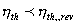
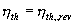
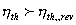
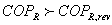

MODULE 10: HEAT ENGINES, REFRIGERATORS AND
HEAT PUMPS
(fragments of the CD that comes with
Cengel&Boles's book "Thermodynamics", 3-d edition, McGraw-Hill,
1998)
Class notes (end)
Perpetual-motion machines
Any device that violates the first or second laws of thermodynamics is called a perpetual-motion machine. If the device violates the first law, it is a perpetual-motion machine of the first kind. If the device violates the second law, it is a perpetual-motion machine of the second kind.
Reversible Processes
A reversible process is a quasiequilibrium, or quasistatic, process with a more restrictive requirement.
Internally Reversible Process
The internally reversible process is a quasiequilibrium process, which once having taken place, can be reversed and in so doing leave no change in the system. This says nothing about what happens to the surroundings about the system.
Totally or Externally Reversible Process
The externally reversible process is a quasiequilibrium process, which once having taken place, can be reversed and in so doing leave no change in the system or surroundings.
Irreversible Process
An irreversible process is a process that is not reversible.
All real processes are irreversible. Irreversible processes occur because of the following:
Friction
Unrestrained expansion of gases
Heat transfer through a finite temperature difference
Mixing of two different substances
Hysteresis effects
I2R losses in electrical circuits
Any deviation from a quasistatic process
The Carnot Cycle
French military engineer Nicolas Sadi Carnot (1769-1832) was among the first to study the principles of the second law of thermodynamics. Carnot was the first to introduce the concept of cyclic operation and devised a reversible cycle that is composed of four reversible processes, two isothermal and two adiabatic.
The Carnot Cycle
Process 1-2 Reversible isothermal heat addition at high temperature, TH > TL to the working fluid in a piston-cylinder device which does some boundary work.
Process 2-3 Reversible adiabatic expansion during which the system does work as the working fluid temperature decreases from TH to TL.
Process 3-4 The system is brought in contact with a heat reservoir at TL < TH and a reversible isothermal heat exchange takes place while work of compression is done on the system.
Process 4-1 A reversible adiabatic compression process increases the working fluid temperature from TL to TH.
You may have observed that the power cycle operates in the clockwise direction when plotted on a process diagram. The Carnot cycle may be reversed, in which it operates as a refrigerator. The refrigeration cycle operates in the counter clockwise direction.
Carnot Principles
The second law of thermodynamics puts limits on the operation of cyclic devices as expressed by the Kelvin-Planck and Clausius statements. A heat engine cannot operate by exchanging heat with a single heat reservoir, and a refrigerator cannot operate without net work input from an external source.
Considering heat engines operating between two fixed temperature reservoirs at TH > TL. We draw two conclusions about the thermal efficiency of reversible and irreversible heat engines, known as Carnot Principles.
(a) The efficiency of an irreversible heat engine is always less than the efficiency of a reversible one operating between the same two reservoirs.
(b) The efficiencies of all reversible heat engines operating between same two constant temperature heat reservoirs have the same efficiency.
As the result of the above, Lord Kelvin in 1848 used energy as a thermodynamic property to define temperature and devised a temperature scale that is independent
of the thermodynamic substance. He considered the following arrangement:
The following is Lord Kelvin's Carnot heat engine arrangement.
Since the thermal efficiency in general is
for the Carnot Engine, this can be written as
Considering engines A, B, and C
This looks like
One way to define the f function is
The simplest form of is the absolute temperature itself.
The Carnot thermal efficiency becomes
This is the maximum possible efficiency of a heat engine operating between two heat reservoirs at temperatures TH and TL. Note that the temperatures are absolute temperatures.
These statements form the basis for establishing an absolute temperature scale, also called the Kelvin scale, related to the heat transfers between a reversible device and the high- and low-temperature heat reservoirs by
Then the QH/QL ratio can be replaced by TH/TL for reversible devices, where TH and TL are the absolute temperatures of the high- and low-temperature heat reservoirs, respectively. This result is only valid for heat exchange across a heat engine operating between two constant temperature heat reservoirs. These results do not apply when the heat exchange is occurring with heat sources and sinks that do not have constant temperature.
The thermal efficiencies of actual and reversible heat engines operating between the same temperature limits compare as follows:


- irreversible heat engine

- reversible heat engine

- impossible heat engine
Reversed Carnot Device Coefficient of Performance
If the Carnot device is caused to operate in the reversed cycle, the reversible heat pump
is created. The COP of reversible refrigerators and heat pumps are given in a similar manner to that of the Carnot heat engine as
Again, these are the maximum possible COPs for a refrigerator or a heat pump operating between the temperature limits of TH and TL.
The coefficients of performance of actual and reversible (such as Carnot) refrigerators operating between the same temperature limits compare as follows:
- irreversible refrigerator
- reversible refrigerator

- impossible refrigerator
A similar relation can be obtained for heat pumps by replacing all values of COPR by COPHP in the above relation.